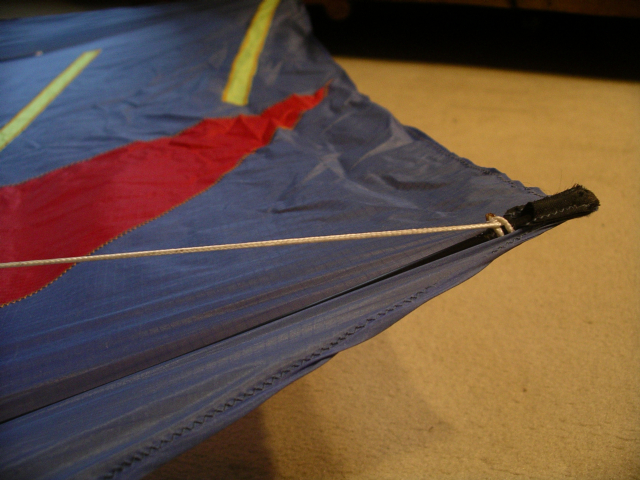
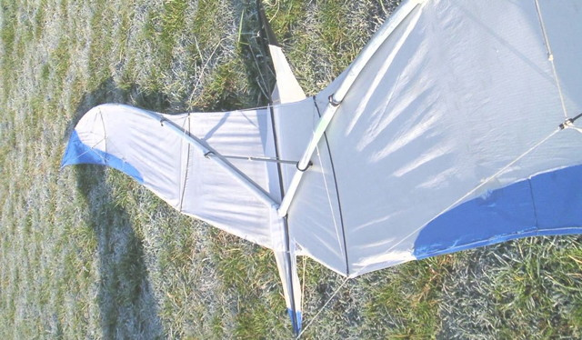
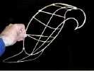
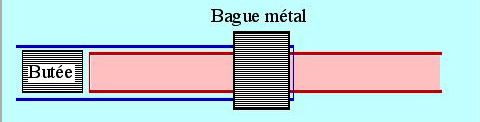
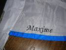
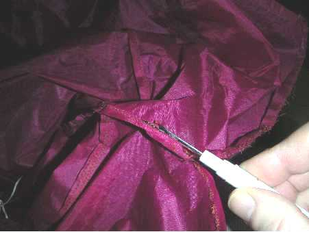

Tours de mains

La cyano ? Ca colle ! Article publié au LUCANE n°143 et modifié.
La cyano peut bien vous faciliter la tâche !

Ne rejetez pas avec mépris cette solution certes économique...
Elle présente quelques inconvénients, mais aussi beaucoup d'avantages propres !

Un atelier chinois Article publié au LUCANE n°109 (sept 2004).
Stage d'apprentissage : utilisation du bambou, assemblage, entoilage, bridage.
Réalisation d'un aigle chinois sous la direction de Wang Zhushan.

Réaliser un tendeur aisément réglable et qui tienne.
Utilisation : réglages, brides, montage de rokkaku ou tous cerfs-volants cintrés, ...

Des tubes les uns dans les autres facilement et avec sécurité...
et pas comme cela ->

Raccordement central facile à réaliser, réglable, solide.

Réalisation simple de fourreaux pour les tubes.
Comment accrocher des brides sur ces tubes durablement.

Comment broder votre nom à la machine sur votre CV.
Très utile comme Pub, ou si jamais vous êtes coupés...

Si vous vous êtes trompé, s'il faut modifier la toile...
...il va falloir en découdre !
Visiteurs :